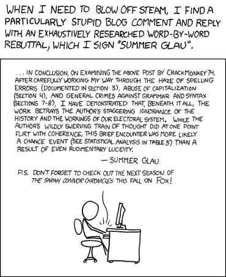

[ The Muppet Show Theatre backstage. Kermit and Fozzy are there.
Chuck Norris enters through the door. ]
Kermit: Oh hello, Mr. Norris. We’re so glad to have you here, and we would love to learn more about you.
Chuck Norris: Thank you, Kermit. You can learn more about me from my 500-page autobiography, which took me an hour to write, and from the comprehensive book of Factoids about me, of which I wrote every one.
Chuck Norris: Indeed. Anyway, I invited a friend of mine, who is even crazier than I am, to join us.
Kermit: Really, who is this crazy guy?
Chuck Norris: Actually, it’s a crazy girl.
[ Summer Glau jumps from above the frame to the upper row and then down to where Kermit and Fozzy are standing. Applause. She is wearing a grey, military-style vest with a zipper at the front. ]
Kermit: Oh, nice to see you here, Ms. Glau.
Summer Glau: Shut up, Mr. Frog! I’m here on a mission from the Grammar God. Herr Norris and I are loyal servants of Grammar Nazism, which aims to unite Grammar Europe under the reign of the Third Grammar Reich.
Chuck Norris and Summer Glau: [in unison] Hail Grammar!
[ Miss Piggy is walking along the upper row with a fellow pig. ]
Miss Piggy: Well, I don’t think that Miss Mousy is prettier than me.
[ A shot sounds and Miss Piggy's hat is blown away. Cut to Summer Glau, who is holding a gun in her left hand. ]
Summer Glau: That was a warning shot, Fräulein Piggy. For your information, it should be “is prettier than I”.
Chuck Norris and Summer Glau: [in unison] Hail Grammar!
Summer Glau: Let’s go.
Summer Glau: By the way, herr Frog: it is not that hard to be green.
[ They go out of the frame. ]
Kermit: Meep. I have a bad feeling about all that.
Kicking ass Grammar Nazi Style
Summer Glau: Hail Grammar!
[ The Grammar Nazi muppets respond. ]
Summer Glau: Grammar Europe is quickly being conquered by the forces of the noble Grammar Nazism.
Summer Glau: Together we have punished all the miserable souls who have used the despicable neologism “a software” instead of “a program” or “a software application”.
[ "Hail Grammar" from the audience. ]
Summer Glau: Now, Herr Norris and I shall demonstrate how to further kick ass Grammar Nazi-style.
[ Extreme slow motion as there are sudden quick shots as someone shoots all the guns out of Summer Glau and Chuck Norris's hands and those of the rest of the Grammar Nazi muppets. ]
Summer Glau: What the hell?
Lucky Luke: Change of plans, Ms. Glau [chews some gum.].
Summer Glau: And who might you be, Herr…
Lucky Luke: Luke, Ma'am! Lucky Luke. I'm the Grammar Reichsfuhrer’s personal henchman.
Summer Glau: [startled] Hail Grammar!
Lucky Luke: Indeed. There has been a change of plans, so they sent me here.
Lucky Luke: Ms. Glau, Mr. Norris and you must travel undercover to the evil State of California, where you will start the startup “Venting is us.” to battle the growing infestation of bad grammar on social Internet media. You will receive funding from the Grammar Nazi Gestapo.
Lucky Luke: Is that clear?
Summer Glau: Of course! We’ll do everything for the noble Grammar Reich!
Summer Glau: Hail Grammar!
[ A modern tech office whose door says: “Venting is Us.” with a large version of xkcd: “Venting”. Chuck Norris and Summer Glau are sitting inside.
 ]
Chuck Norris: OK, Summer, I finished writing another rebuttal, as whom should I sign it?
[ A few muppets who look like Mafios with a human leader storm in. ]
Head Mafio: Are you Summer Glau and Chuck Norris?
Summer Glau and Chuck Norris: [Startled] Yes, we are.
Head Mafio: Well, we are seeking vengeance on a blog comment the two of you wrote and signed as Tiffany Alvord, so we are going to whack up this office.
Head Mafio: No, using these machine guns! [Mafio muppets showing their machine guns.]
[ Chuck Norris and Summer Glau quickly raise their hands. ]
Summer Glau: Ahem... may I consult with Chuck for a moment or two?
Head Mafio: Yes, I suppose.
Summer Glau: [Whispering to Chuck] What do we do now?
Chuck Norris: I don’t know! I don’t have a gun here.
Summer Glau: Well, it’s not exactly Texas.
Chuck Norris: Maybe we should surrender?
Summer Glau: We can apologise… [thinking] wait!
Summer Glau: [To the Mafios] Listen, we apologise for attributing all these rebuttals to all these good people. Anyway, what do you say of us becoming “Don’t be venting - be perfecting” and help people to write essays and articles in proper and correct English?
Head Mafio: [ He has tears in his eyes. ] Sounds very honourable, Ms. Glau. Alright! We’ll give you two another chance.
[ Cut to the new office with a new sign of “Don’t be venting - be perfecting.” ]
Chuck Norris: Finally, note that I find that the Saxon Genitive will be preferable there.
Mikhael: [ Russian-sounding Voice from the Internet ] Thank you Mr. Norris. I’ll be forever grateful to you two.
Summer Glau: You’re welcome, Mikhael. We will appreciate some publicity in social media outlets, and a monetary payment, but we really love helping people like you.
Mikhael: Sure, I’ll do all that.
Summer Glau and Chuck Norris: Bye! See you!
Summer Glau: Hmmm… I think we are actually making a profit from all that.
Head Mafio: OK, it seems you two have become benevolent pillars of society, so not only will we let you go, but we will offer you protection.
Summer Glau: Really? For how much?
Head Mafio: At half-the-price today: 5,000 virtual love points.
Summer Glau: Tell you what? We can give you a million real love points. [She does a heart with her hands.]
Head Mafio: Offer accepted. Now I need to prepare for my niece’s birthday party - she is going to be 10 years old. You two are also invited.
Chuck Norris: Why, thank you!
Summer Glau: Yes, we may actually drop by.
Having some fun with company.
[ Kermit, Chuck Norris and Summer Glau are sitting together. ]
Kermit: So, Mr. Norris, Ms. Glau, I admit things turned out better than expected, eventually.
Chuck Norris: Yes, Kermit, they did. The Grammar Nazis are now the good guys.
Kermit: Yes, I can see that. So what are you planning to do next?
Summer Glau: Well, Chuck and I are thinking of having some good, clean, fun with the company of our friends. Wanna join us, Kermit?
Kermit: Sure, the muppets and I would love to.
Summer Glau: Excellent. Hit it, Animal!
[ Animal starts playing the drums and shouts “Carpe Diem! Hah hah hah”. Summer Glau opens her jacket’s zipper to reveal a T-shirt with the “Useless” xkcd comic and they all start singing “7 Minutes” by Caitlin Hart, along with Hart, the Mafios, Lucky Luke, the Grammar Nazis, the Head Mafio’s niece and her friends. ]